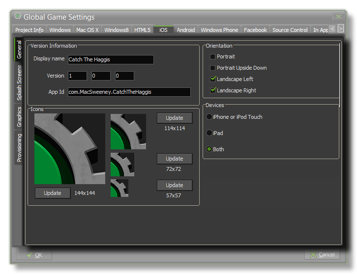
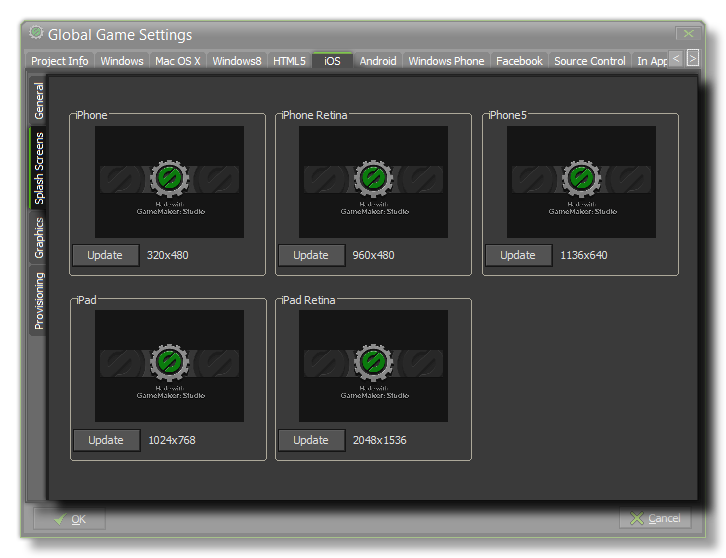
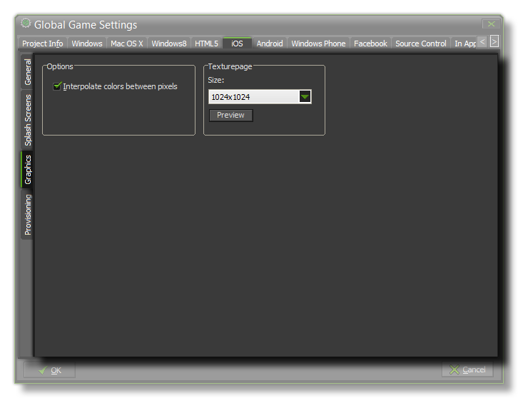
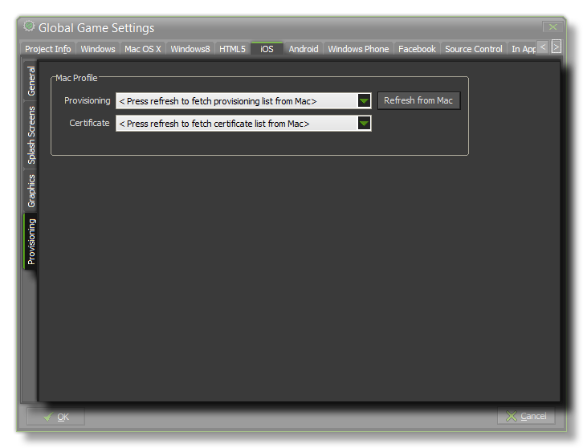

This iOS tab is split into three separate sub-tabs (accessible on the left of the window) to make changing and updating the information for your game clearer and less complicated. These tabs are explained in the following sections.

The first thing to do is fill in the details about your game, including its Display Name, its App id and the Version info. Then you will need to give your game its Icons. The
icons should be authored as a individual 32bit *.png files with sizes of 57x57px, 72x72px, 114x114px and 144x144px.
NOTE: The App id must be in the correct reverse URL format for in app purchases to work correctly, EG: com.[Company].[GameName]
The last two sections on this tab are Orientation and Devices. The orientation section can be used to lock the game to a specific orientation by checking one or all of the following options:
- portrait
- portrait upside down
- Landscape left
- Landscape right
The Devices section is used to target specific iOS platforms, either iPhone or iPod Touch, iPad, or both.
 This tab permits you to add seperate graphics as splash screens (the image that will be shown briefly while your app loads) for each of the different iOS target devices. These images must be authored as individual 32bit *.png images with no transparencies and at the correct size for each of the devices.

Once you have configured the game details and presentation graphics, there are two more available options on the Graphics tab. The first is the Interpolate Colors Between Pixels option that (when
checked) turns on interpolation, which basically "smooths" pixels. For crisp pixel graphics, it should be off, but if you have nice alpha blends and smoothed edge graphics it is better left on.
Next there is the option to set the size of the Texture Page. The default (and most compatible) size is 1024x1024, but you can choose from anywhere between 256x256 up to 2048x2048.
There is also a button marked View which will generate the texture pages for this platform and then open a window so that you can see how they look. This can be very useful if you wish
to see how the texture pages are structured and to prevent having texture pages larger (or smaller) than necessary.
NOTE : Be aware that the larger the size of the texture page, the less compatible your game will be.

The Provisioning tab is where you configure the Mac OS options to get the correct certificates for the iOS export module. Her you should go to the Provisioning and Certificate
sections to fill in the details of your developer certificates, which is done by simply clicking on the button marked Refresh From Mac. Please note this can only be completed successfully if you have
previously signed up for an Apple developer account and have set up GameMaker:Studio correctly to communicate with your Mac computer where this information is stored.